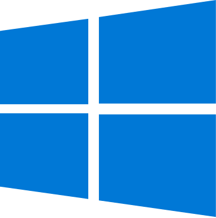
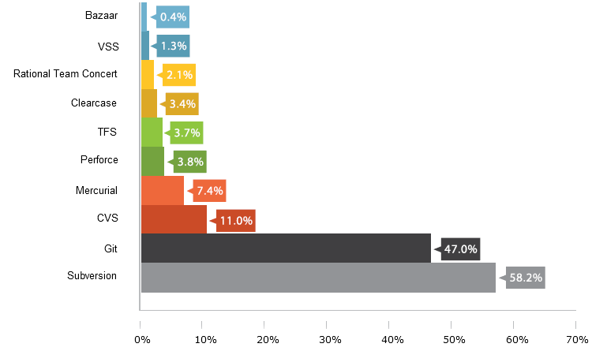
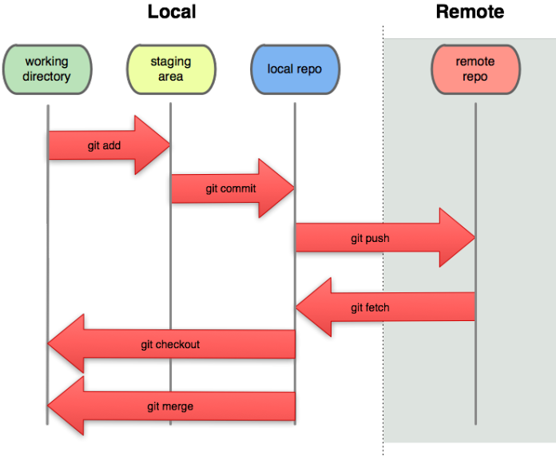

Workshop Git/GitHub

Renato Fogaça
rf@rf.pro.br

Licença
Esta apresentação está licenciada com uma Licença
Creative Commons - Atribuição 4.0 Internacional.
Agenda
Ementa do Workshop - Parte 1
- Introdução;
- Controle de Versão;
- História do Git;
- O que são o Github, Gitlab e os repósitórios remotos?
- Instalando o Git;
- Configuração inicial do Git;
Temas do Workshop - Parte 2
- Configuração inicial do Git;
- Usando editor do terminal;
- O ciclo de vida dos status de seus arquivos;
- Visualizando Logs;
- Visualizando o diff;
- Desfazendo as coisas;
Ementa do Workshop - Parte 3
- Criando um repositório no Github;
- Ligando repositório local a um remoto;
- Enviando mudanças para um repositório remoto;
- Clonando repositórios remotos;
- O que é um branch e por que usar?
- Criando um branch;
Ementa do Workshop - Parte 4
- Movendo e deletando branches;
- Entendendo o Merge;
- Entendendo o Rebase;
- Merge e Rebase na prática;
- Criando o .gitignore;
- Git Stash;
Ementa do Workshop - Parte 5
- Versionando com Tags;
- Salvando sua sexta com Git Revert;
- Extras?
- Gh-Pages no Github?
- Criar uma página e hospedá-la no Github, com o domínio?
- Próximos passos?
Apresentações
Nome e idade;
Instituição de Ensino;
Atividades Desempenhadas;
História
Como surgiu?
Kernel do Linux em 2002, o projeto do começou usar uma DVCS proprietária chamada BitKeeper.
Em 2005, BitKeeper "quebrou" >> Ferramenta passou a ser PAGA.
Desenvolver a própria ferramenta baseada em lições aprendidas.
Metas da Nova Ferramenta
O que essa ferramenta teria que possuir?
- Velocidade;
- Projeto Simples;
- Forte suporte para desenvolvimento não-linear;
- Completamente distribuído;
- Capaz de lidar com projetos grandes como o núcleo o Linux com eficiência (velocidade e tamanho dos dados);
Motivação
Linus Torvalds estava insatisfeito com o BitKeeper, ferramenta de controle de versão que ele utilizava para desenvolver o kernel do Linux.
“The end result was I decided I can write something better than anything out there in two weeks, and I was right.”
Motivação...
Atualmente o kernel Linux é auxiliado exclusivamente pelo Git.
o que seria um controlador de versão?
Sistema que registra alterações em um arquivo ou conjunto de arquivos ao longo do tempo para que você possa lembrar versões específicas mais tarde
Controle Local
Uma das ferramentas VCS mais populares foi um sistema chamado RCS, que ainda é distribuído com muitos computadores hoje.

Controle Centralizado
CVS, Subversion e Perforce, têm um único servidor que contém todos os arquivos de controle de versão.

Controle Distribuído
Duplicam localmente o repositório completo. Se qualquer servidor morrer, qualquer um dos repositórios podem ser copiado.

Mas por que usar um controle de versão?

Organizar o desenvolvimento
Gerenciar manualmente as versões do seu software não será mais
necessário, o Git gerencia de uma forma mais organizada e eficiente.

Organizar o desenvolvimento...
O Git oferece controle total do projeto ao desenvolvedor, e mais:
- Visualizar as mudanças ocorridas em cada arquivo;
- Visualizar o estado do projeto em etapas anteriores;
- Desfazer mudanças;
- Desenvolver funcionalidades em paralelo.
Compartilhar projetos
Desenvolver projetos colaborativos nem sempre é fácil. Utilizar
DropBox, Google Drive e pen drives pode gerar problemas.

Compartilhar projetos...
As ferramentas citadas foram projetadas para fins genéricos, não oferecendo
aspectos importantes para equipe de desenvolvimento.

Compartilhar projetos...
O GIT ajuda solucionar:
- Histórico de ações;
- Consistência entre as versões;
- Indentificação de bugs;
- Desfazer alterações prejudiais.

Independe da plataforma

O mercado utiliza
Desenvolvimento profissional de projetos
O mercado utiliza...
E o Git está entre os mais populares.

Quem usa Git?

Vagas de emprego
Mais Vagas?
Como o Git funciona?
Armazenamento
Baseado em Snapshots e não em lista de alterações
SCV convencionais

Git
SCV Distribuído
Todos os clientes possuem uma cópia completa do repositório remoto.
Fluxo de trabalho

Antes de começarmos...
Instale o Git
Cadastre-se no GitHub
Para usuários Linux...
Para Debian/Ubuntu
apt-get install git
Para Fedora
dnf install git
Para usuários Windows...
Acesso o link Download Git
Next até finalizar a instalação
Vamos à prática!

Consultas rápidas
Caso não se lembre de algum comando ou queira uma explicação...
git help
ou
man git
Configurando o ambiente
Identificação:
git config --global user.name "Nome"
git config --global user.email email
Editor:
git config --global core.editor editor
Verificar configurações atuais:
git config --list
Trabalhando localmente
Iniciando um projeto
Para iniciar um repositório Git:
git init
Este comando cria toda a estrutura que o Git necessita para funcionar. Os arquivos são criador na pasta oculta .git/
Tudo pronto para desenvolver!
Ciclo de Vida
Possíveis status dos arquivos

Verificando o projeto
Verificando o status atual:
git status
Esse comando também exibe as alterações ocorridas no repositório desde o último commit.
Adicionando arquivos
O git add adiciona ou atualiza um arquivo da staging area.
git add arquivo
git add diretório
git add *
O comando informa ao Git para rastrear o referido arquivo. Caso o arquivo já esteja sob controle do Git, ele o atualiza.
Confirmando mudanças
O git commit transfere o estado do projeto salvo na staging area para o repositório do projeto.
git commit
git commit -m "descrição do commit"
git commit -am "descrição do commit"
Simplificando, ele confirma as suas modificações, criando um novo estado ou "ponto de referência" para o seu projeto. Todo commit é associado à um checksum para poder ser referenciado posteriormente.
Esqueci um arquivo...
O parâmetro --amend com o git commit permite que o mesmo commit seja refeito.
git commit -m "Descrição"
git add
git commit --amend
Todo commit DEVE possuir uma mensagem de identificação, usada para descrever as alterações do commit. Por favor, usem-a
Exemplo de como não se fazer um commit.
Fonte: Sem link preciso xD.
Comparando alterações
O git diff informa exatamente "o que" foi alterado
git diff
git diff arquivo
git diff id_commit
git diff id_commit id_commit
O comando git diff compara o estado do repositório atualmente com o estado salvo na staging area
git diff --cached
O comando git diff --cached compara o estado do repositório salvo na staging area com o estado do último commit
Histórico de alterações
O comando git log exibe o histórico de commits do projeto
git log
git log --oneline
git log -p
git log --graph
A opção -p mostra o diff introduzido em cada commit. Usando -2 limita a saída somente às duas últimas entradas.
Visualizar alterações linha por linha
O comando git blame exibe as alterações feitas cada linha do arquivo.
git blame arquivo
git blame -L linha1,linha2 arquivo
"NAVEGANDO" pelo projeto
A partir do código associado aos commits você pode voltar para um determinado 'estado' do projeto
git checkout id_commit
O comando git checkout também redireciona arquivos e branches
Desfazendo alterações
Se eu me arrepender das minhas últimas alterações???
Você pode descartar mudanças no seu working directory voltando o estado dos seus arquivos para o último salvo na staging area.
git checkout arquivo
git checkout .
Desfazendo alterações...
E se eu já adicionei as alterações na staging area???
O comando git reset HEAD devolve as modificações da staging area para o working directory.
git reset HEAD arquivo
git reset HEAD .
Desfazendo alterações...
E se eu já commitei minhas alterações??
Há duas maneiras diferentes de se fazer isto, você irá escolher uma ou outra dependendo do resultado que você espera
Desfazendo alterções...
O comando git reset faz o projeto/arquivo voltar para um estado anterior.
git reset id_commit
git reset arquivo
git reset --hard id_commit
Desfazendo Revertendo alterações
O comando git revert não desfaz um commit, mas cria outro removendo a alteração anterior.
git revert id_commit
Removendo arquivos
O comando git rm remove um arquivo do seu projeto.
git rm arquivo
git rm --cached arquivo
A opção --cached remove o arquivo apenas do Git, sem esta opção o comando remove o arquivo do seu computador também.
Ramificando a produção
Ramificando a produção...
O Git permite criar uma linha independente de desenvolvimento no seu projeto. Isto permite alterações em partes especificas do software sem comprometer o restante do projeto.
Ramificando a produção...
O comando git branch cria um novo branch a partir do último commit.
git branch nome_branch
Navegando entre branches
Além de visualizar commits antigos, o git checkout também é o responsável por alterar o branch corrente.
git checkout nome_branch
Unindo ramificações
Após desenvolvedor uma funcionalidade separada do fluxo principal, muitas vezes é interessante incorporar as modificações no branch master. O comando git merge uni dois branches novamente, combinando as funcionalidades do branch independente com o branch atual.
git merge nome_branch
Deletando ramificações
Após incorporar um branch à outro, pode não ser mais necessário manter uma ramificação. Para deletar um branch utiliza-se do parâmetro -d juntamente com o comando git branch
git branch -d nome_branch
Repositórios remotos

Trabalhando com repositórios remotos...
"Muitas vezes" não desenvolvemos projetos sozinhos.
Normalmente um repositório remoto possui sempre a versão mais atualizada dentre os integrantes.
Permite desenvolver e acompanhar o desenvolvimento de várias funcionalidade ao mesmo tempo.
Trabalhando com repositórios remotos...
Muitas empresas possuem servidores dedicados para suas equipes, mas há algumas soluções que cumprem a mesma função.
Trabalhando com repositórios remotos...
Mas daremos foco ao case mais bem sucedido.

Referenciando um repositório remoto
O comando git remote add é o responsável por referenciar um repositório remoto em um repositório local já existente
git remote add origin URL
O comando git remote rm é utilizado para apagar uma referência à um repositório remoto. Usado para substituir o local onde o remoto está.
git remote rm origin
Copiando um repositório remoto para seu pc
Quando se deseja iniciar/continuar um projeto já existente, utiliza-se do git clone para copiar todo um repositório remoto para uma máquina local, seja sua ou não.
git clone URL
Enviando conteúdo para o repositório remoto
Utiliza-se o git push para enviar as modificações para o repositório.
git push
git push origin master
git push origin nome_branch
Baixando atualizações do repositório remoto
O comando git fetch baixa as atualizações mas não as incorpora ao repositório local.
git fetch
git fetch origin master
git fetch origin nome_branch
Baixando atualizações do repositório remoto...
Utilizando o comando git pull, que baixa e incorpora as modificações no repositório local. Equivale à um git fetch seguido de uma git merge.
git pull
git pull origin master
git pull origin nome_branch
Criando versões
Conforme incluímos funcionalidades no sistema, podemos definir pontos relevantes no software, que geralmente, marcam uma versão.
O comando git tag inclui um rótulo à um determinado commit para que este possa ser referenciado mais facilmente.
git tag -a versao -m "descrição"
Criando versões...
Para vizualizar utilize o comando git tag sem parâmetros.
git tag
Criando versões...
Para visualizar o conteúdo de uma versão lançada, utilize o comando git checkout usando o nome da tag.
git checkout nome_tag
Criando versões...
Para enviar os rótulos criados para o repositório remoto, utilize o parâmetro --tags no comando git push.
git push origin --tags
Extras?
HTML?
HyperText Mark-up Language;
Criada por Tim Berners-Lee em 1990
Linguagem de Marcação;
Navegador interpreta e exibe o conteúdo;
Composta por tags;
CSS?
Criada por Hakon Wium Lie, em 1994
Cascading Style Sheets;
CSS nível 1 em 1996, reconhecido pela W3C.
Facilita o desenvolvimento;
GH-Pages
Torna seu github uma hospedagem;
Ofere um domínio próprio, parcialmente personalizado;
Dicas úteis
Algumas configurações
Configuração da Interface gráfica:
gitk
Usar saídas coloridas:
git config color.iu true
Exibir log em apenas uma linha por commit:
git config format.pretty oneline
Comandos Não Frequentes, mas úteis...
Configuração de Proxy:
git config --global http.proxy http://proxy_de_saida:porta_de_saida
Remover configuração de Proxy:
git config --global --unset http.proxy
Tirar o estado sujo do seu diretório de trabalho:
git stash